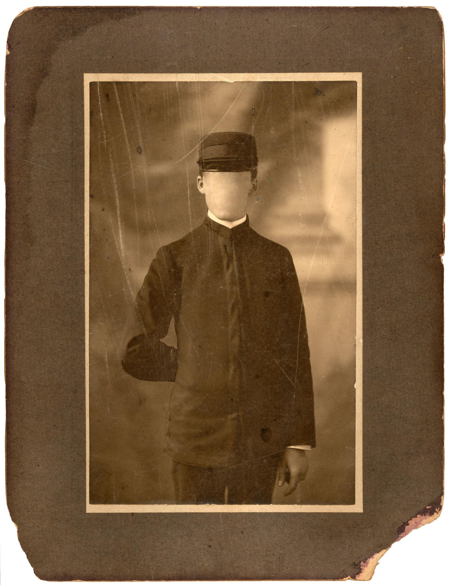

SUPERNATURAL ARCHIVES DEPARTMENT
IDENTIFICATION RECORD
SUPERNATURAL INVESTIGATION DIVISION
SUBJECT PHOTOGRAPHFILE NO. 047-B
SUBJECT UNKNOWN
- ALIAS
- The Hollow Man
- SPECIES
- Undetermined
- HEIGHT
- 6 ft. 8 in.
- LAST REPORT
- 1856
- LAST SEEN
- Belmont Guest House, New York city
- STATUS
- At Large
PHYSICAL DESCRIPTION
Subject exhibits unnaturally elongated limbs, unusually pale skin, and a disturbing absence of clearly identifiable facial features. Despite these abnormalities, its overall appearance bears an unsettling resemblance to that of a hotel attendant.
OBSERVED BEHAVIOR
Subject appears predominantly after sunset and has been frequently associated with unexplained incidents occurring within hotels. Witness accounts describe unusual vocalizations and behavior seemingly intended to imitate that of ordinary hotel personnel.The entity displays extreme aggression toward individuals who come into direct contact with it. No confirmed survivors have been identified among its victims.
INVESTIGATION NOTES
Available evidence suggests that the subject actively hunts individuals residing in hotels, employing deceptive behavior to persuade potential victims to open their doors. Notably, the entity has never been observed opening a closed door by itself. Whether this limitation is physical or supernatural in nature remains undetermined.
Under no circumstances should personnel approach the subject without explicit authorization. Investigators are strongly advised against opening any door in response to unidentified individuals claiming to be hotel staff, particularly during nighttime hours.